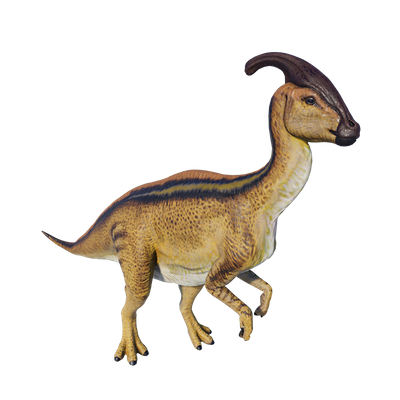

Useful Website
Parasaurolophus is an herbivorous hadrosaurid native to North America, and is famed for its unique head crest, which extends out from the back of its head. This distinctive crest gave the dinosaur its name, which translates to ‘near crested lizard’. Parasaurolophus grows up to around 7.5m in length, and while it usually walks on four legs, it can rear up onto two legs if it needs to run or reach food in high places.
